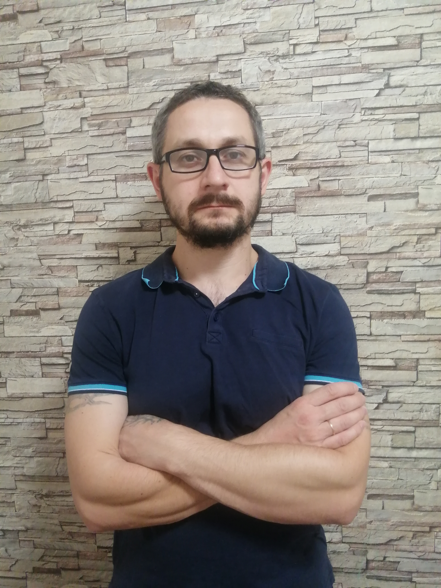

<div class="container">
  
  <p>
    Здравствуйте. Меня зовут Денис Быков я занимаюсь созданием сайтов на JS. А
    также с использованием весьма популярного фреймворка Angular(Angular
    разработан компанией Google) Прошел обучение в GeekBrains по направлению
    JavaScript, Учавствовал в стартапе ish.eart а также занимался другими не
    большими различными задачами.
  </p>
</div>
